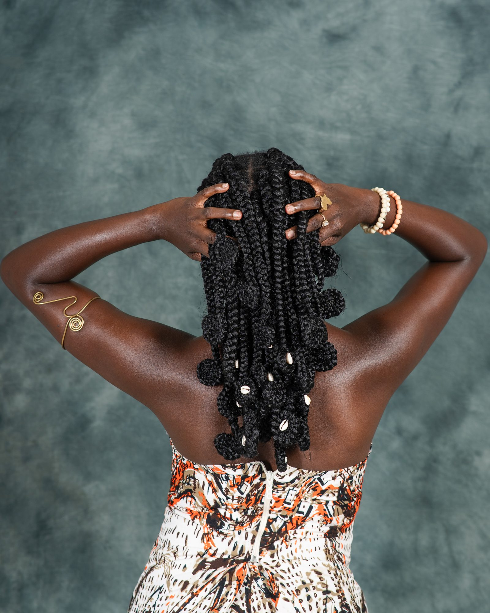
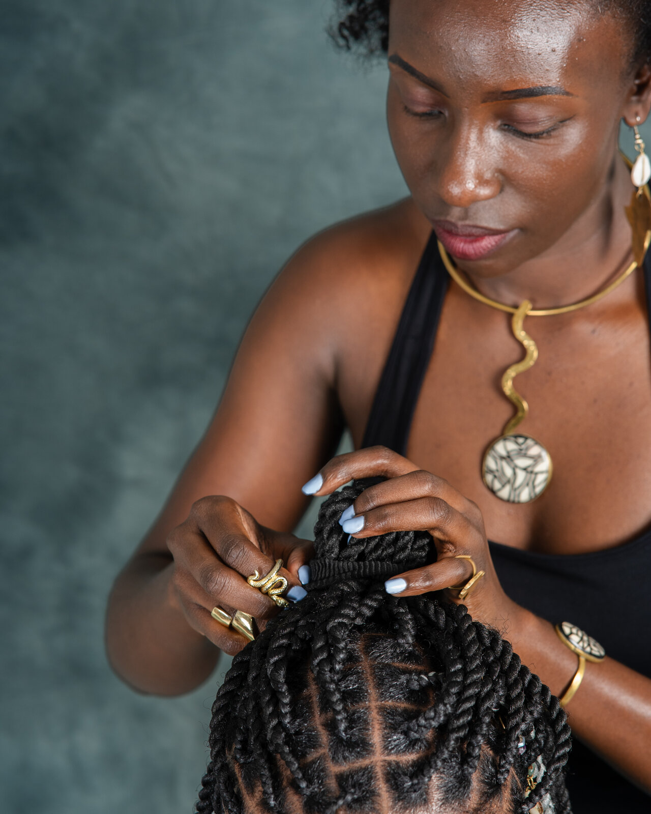
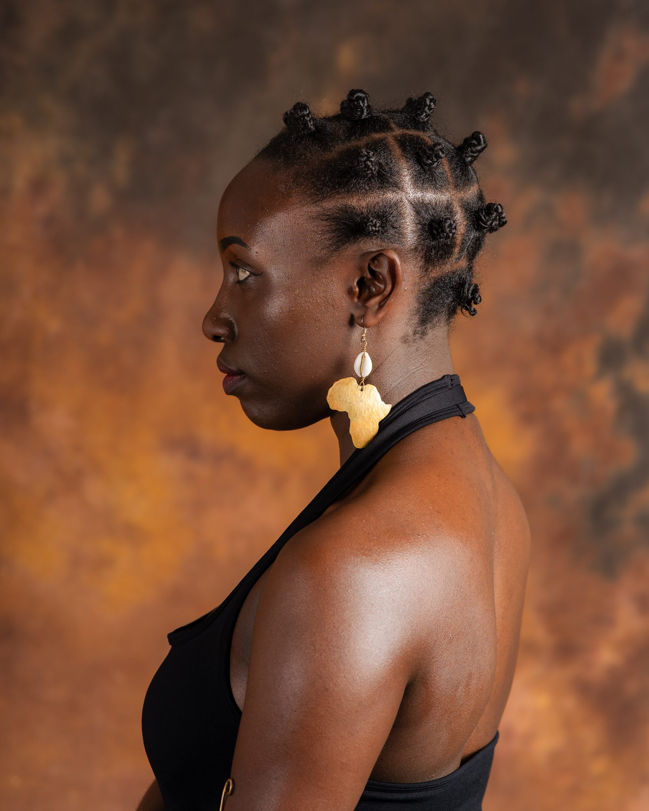
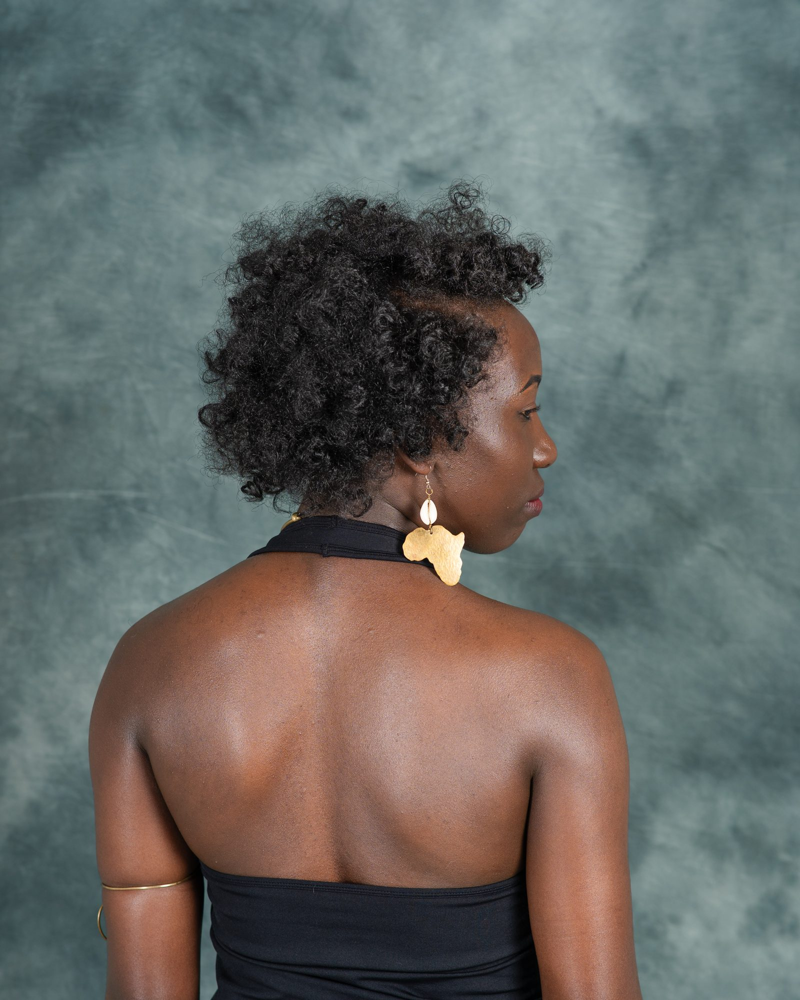
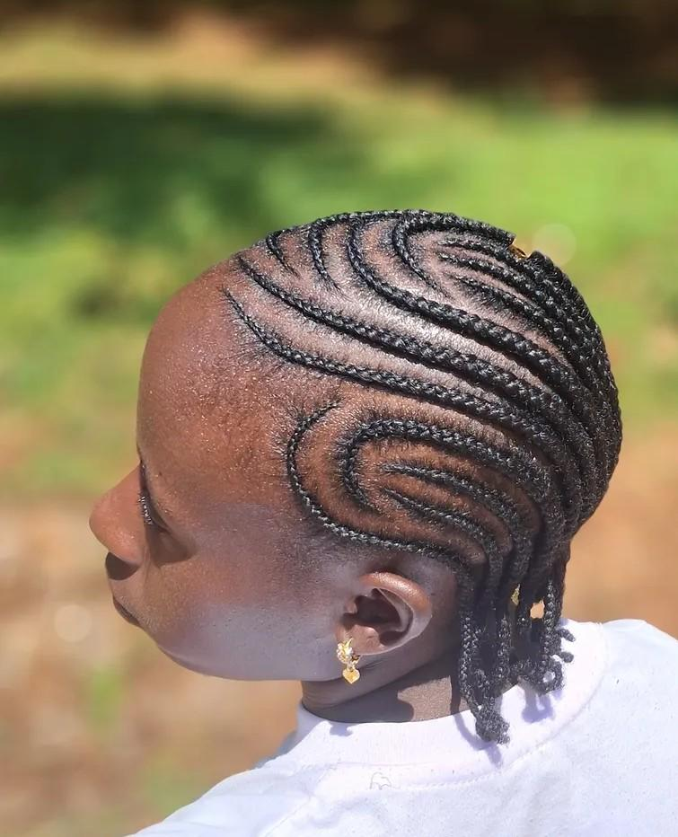
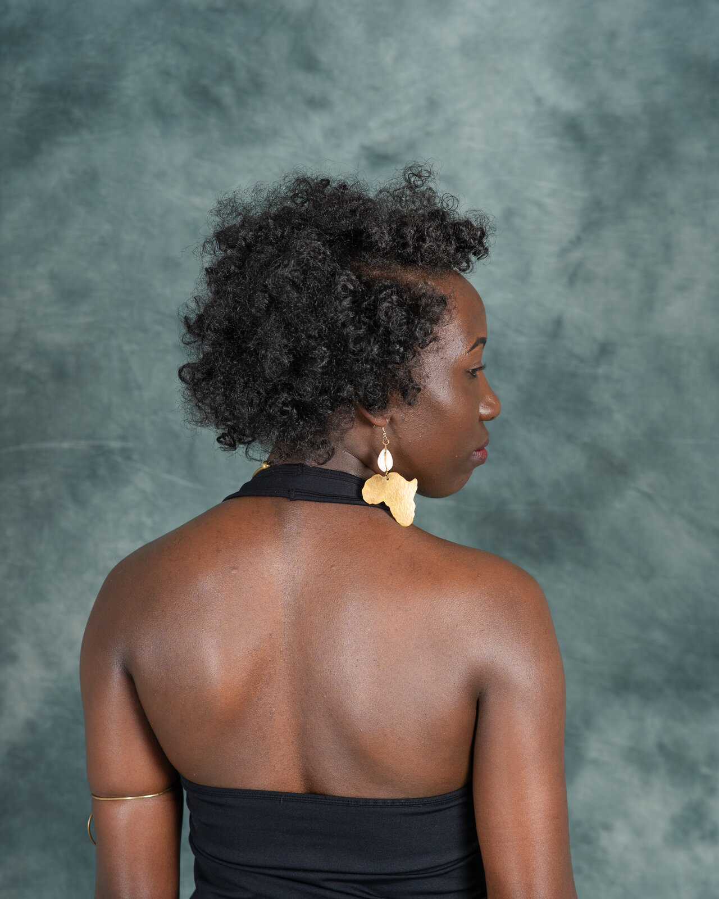
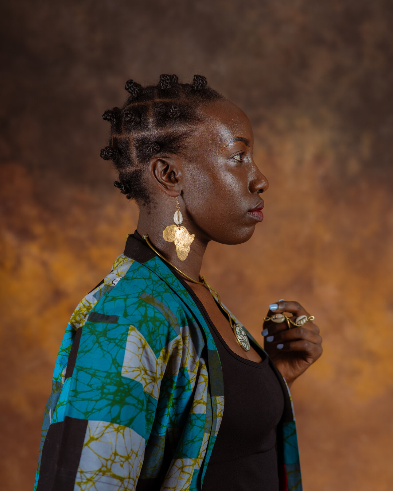
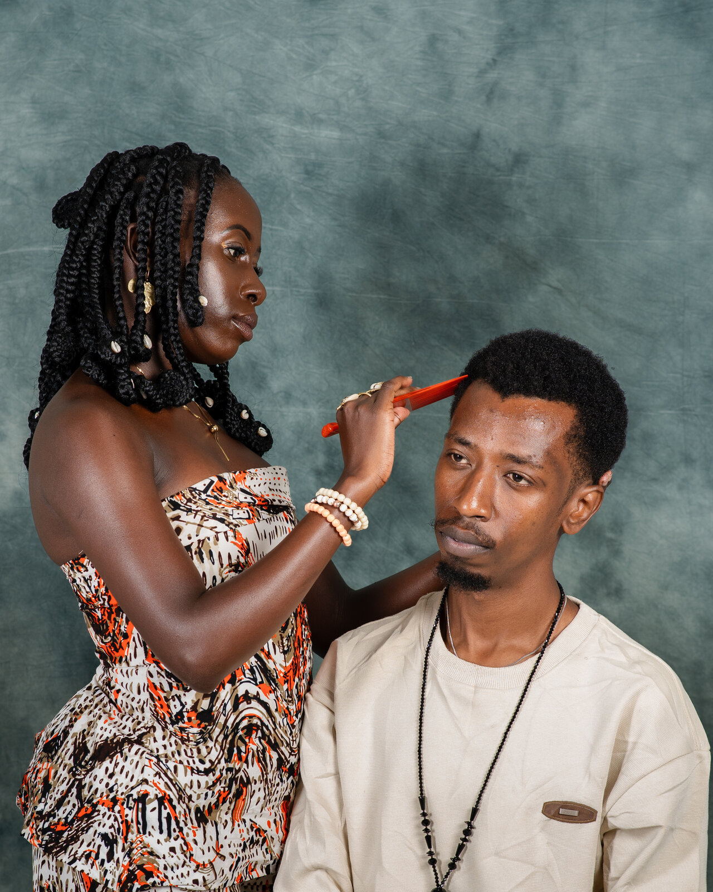
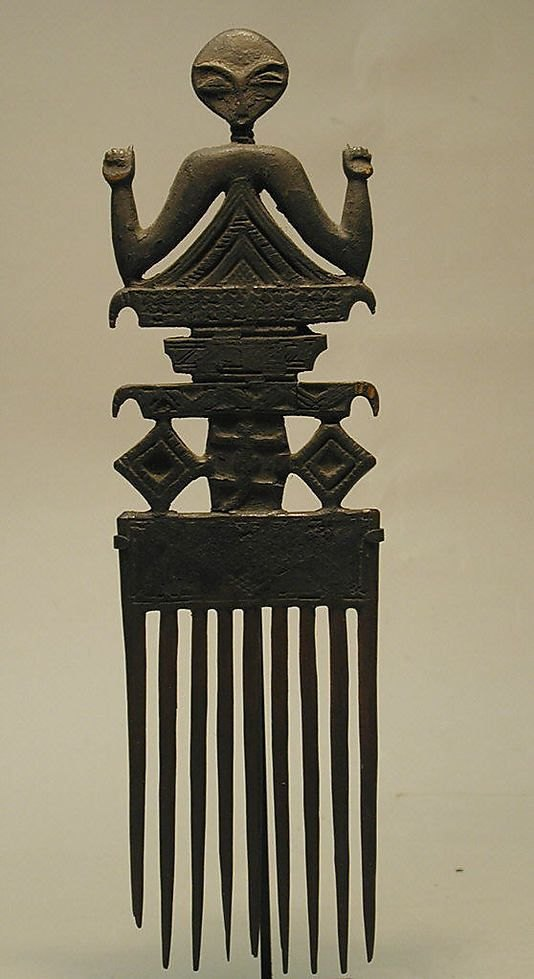

Read, learn, remember
Hair & culture.
Essays, guides and style histories that treat African hair as heritage, not a problem to fix. Start anywhere. If you only read one thing, make it the essay on identity at the bottom of the page.
Hair care
Routines, ingredients and what actually works for tightly coiled hair.

Ancient Botanical Oils: Chebe, Marula and Baobab Traditional African oils that have fed coils for generations. The Science of Porosity and Coily Hair Retention How porosity decides what your hair holds onto, and how to stop breakage.
Nighttime Protection: Silk, Satin and Hair Wrapping Why covering your hair before bed protects moisture and the style you paid for.Hairstyles
Traditional techniques, protective styling and the architecture of the crown.

Bantu Knots: Ancient Architecture for Everyday Hair Zulu-origin knots as protection and as heatless curls.Culture & stories
History, identity, salons, ownership and the wisdom handed down.

The Natural Curly Afro What the afro has meant across Africa and the diaspora.
The Map on the Scalp How braid patterns carried routes, messages and memory. From Shea Butter to Clay Hair rituals before colonial rule: status, rites and beauty.
The Return to the Crown Unlearning texturism and wearing your own texture without apology.
Who Taught Us What Professional Looks Like? Colonial beauty hierarchies and the standards nobody remembers setting.
The Salon Is Never Just a Salon Community, income and conversation. Not only a haircut. Who Really Owns a Hairstyle? Credit, cultural amnesia and telling the story straight.
The Sacred Crown: Iconic African Hair Tools Eight tools across time, from Nile Valley combs to flexi-brushes.An essay on choice, memory and belonging
Hair is an identity.
There are some things about ourselves we recognise before we understand them.
The sound of our mother's voice.
The shape of our hands.
The face in the mirror.
And our hair.
A child does not need to know anything about genetics to understand that their hair belongs to them.
It grows from their own head.
It changes as they grow.
It becomes part of the way they recognise themselves.
Then, slowly, other people begin to tell them what it means.
Too short.
Too thick.
Too rough.
Too much.
Beautiful.
Neat.
Unprofessional.
Different.
By the time we are adults, hair can carry an extraordinary amount of meaning.
Sometimes more than we realise.
For many Africans, hair has always been more than something that grows from the scalp.
It can tell people where you are going.
Who you are.
How old you might be.
What you are celebrating.
How you want to be seen.
A hairstyle can mark a wedding.
A graduation.
A new job.
A new relationship.
A new beginning.
Sometimes it marks the end of something.
There is a reason people change their hair after a breakup.
There is a reason someone cuts their hair after years of keeping it long.
There is a reason a woman can sit in a salon for six hours before an important occasion and somehow feel different when she finally gets up.
The hair has changed.
But something inside her has changed with it.
Or perhaps she is simply seeing herself differently.
This is where hair becomes identity.
Not because a hairstyle permanently defines who you are.
It doesn't.
We change our minds.
We grow tired of styles.
We cut our hair.
We grow it again.
We experiment.
We copy people.
We invent things.
We go through phases.
Our hair can change faster than almost anything else about us.
And yet, somehow, it remains connected to the person underneath it.
Maybe identity isn't about having one fixed appearance.
Maybe identity is also about having the freedom to decide how you appear.
African hair carries another layer of meaning because of its history.
For generations, Africans have been told, directly and indirectly, that certain features were undesirable.
Hair that grew upwards rather than falling down.
Hair that curled tightly instead of flowing.
Hair that required different techniques, different products and different ideas of care.
The message was sometimes blunt.
Sometimes it was disguised as advice.
“Make it neat.”
“Do something with it.”
“You'll look better if you straighten it.”
“That's not appropriate for work.”
“Your hair is too wild.”
Eventually, these comments can become part of the voice inside your own head.
You look into the mirror and judge yourself before anyone else has the chance.
That is one of the quietest ways beauty standards work.
They don't need to follow you everywhere.
Eventually, you carry them with you.
But identity is not the same thing as resistance.
A woman who wears her natural hair is not necessarily making a political statement.
A woman wearing a wig is not necessarily ashamed of her hair.
A man with locs is not necessarily trying to appear rebellious.
Someone who cuts their hair short may simply like short hair.
Someone who spends three hours getting braids may simply enjoy braids.
We sometimes make hair carry too much responsibility.
We want it to prove something.
Pride.
Authenticity.
Culture.
Resistance.
Beauty.
But hair does not owe us a political message.
It belongs to the person wearing it.
That may be the most important part of identity:
choice.
Think about how often hair appears in our memories.
The hairstyle you had in primary school.
The haircut your mother insisted on.
The braids you wore for your first day of school.
The barber who always knew exactly how you wanted it cut.
The hairstyle you had when you first fell in love.
The one in your graduation photographs.
The one you look back at now and wonder what you were thinking.
Hair becomes a timeline.
You can look at an old photograph and remember not only what you looked like, but who you were at the time.
Where you lived.
Who your friends were.
What you believed.
What you were trying to become.
Hair changes with us.
And sometimes it records changes we have forgotten.
There is also something deeply African about the communal nature of hair.
Someone has often been involved in it.
A mother.
A sister.
An aunt.
A friend.
A barber.
A stylist.
Someone sitting behind you with a comb.
Someone separating sections with their fingers.
Someone asking you to tilt your head.
Someone saying, “Don't move.”
The hairstyle may belong to one person, but the knowledge behind it can belong to generations.
That is why losing a hairstyle tradition can mean losing more than an aesthetic.
You can lose a technique.
A memory.
A language.
A connection between generations.
And when someone teaches it again, something comes back.
Not exactly as it was.
Culture rarely does.
But it comes back in a new form.
Perhaps that is why the future of African hair does not have to mean choosing between tradition and modernity.
We can have both.
We can wear traditional styles and invent completely new ones.
We can use techniques passed down by our grandmothers alongside products developed last year.
We can wear our natural hair one month and a wig the next.
We can embrace the history without becoming trapped by it.
Because identity is not a museum.
It moves.
It changes.
It grows.
Much like hair.
And perhaps that is the simplest truth of all.
Your hair does not have to look a certain way to prove that you are African.
It does not have to be natural to prove that you love yourself.
It does not have to be long, short, braided, locked, curly or straight.
It simply has to be yours.
Because hair is not the whole of who we are.
But for something that grows quietly from our heads, it has an extraordinary way of telling the world a little about who we have been,
and who we have chosen to become.
Keep reading on identity
Keep going.
Meet the sisters behind Qress-ent, or see how we make wash day gentler.